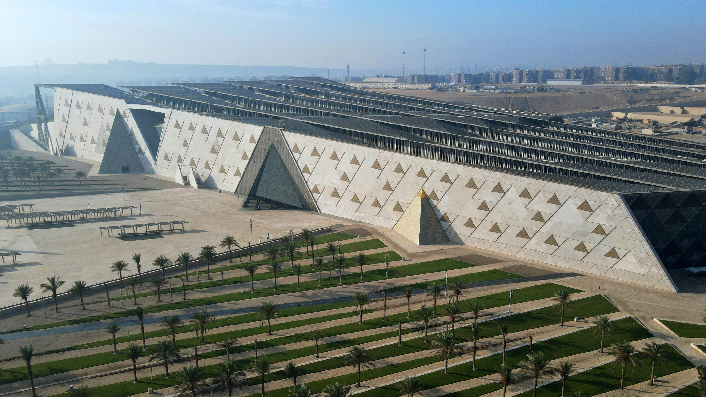
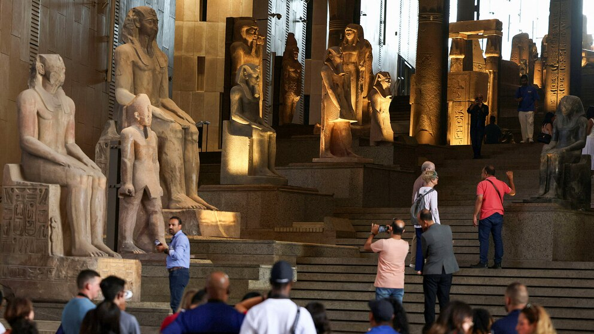

El Gran Museo Egipcio (GEM), tras dos décadas de espera, ha iniciado su apertura gradual frente a las Pirámides de Giza. Este coloso de piedra y cristal no es solo un almacén de antigüedades, sino un portal que conecta la modernidad con 5,000 años de historia, albergando por primera vez la colección completa de Tutankamón en un espacio que dignifica cada centímetro de su legado.
La eternidad de los faraones
Ubicado a escasos dos kilómetros de la meseta de Giza, el GEM sustituye al icónico pero saturado museo de la Plaza Tahrir. Su diseño neofuturista busca emular la eternidad de los faraones, utilizando una fachada de piedra translúcida que filtra la luz del desierto como si fuera el aliento de los antiguos dioses.

Una experiencia inolvidable
La experiencia comienza en el Gran Hall, donde la luz cenital baña la figura colosal de Ramsés II, una mole de granito rojo que parece dar la bienvenida a los visitantes. El recorrido asciende por la Gran Escalera, flanqueada por estatuas que trazan la línea del tiempo de las dinastías egipcias, permitiendo que el espectador sienta la magnitud física del poder antiguo mientras, al fondo, las pirámides reales se asoman por los inmensos ventanales.
El despliegue tecnológico es sin precedentes: cada sala utiliza sistemas de microclima y realidad aumentada para explicar procesos como la momificación o la simbología de los jeroglíficos. Las galerías dedicadas al "Niño Rey", Tutankamón, permiten ver de cerca desde sus sandalias de oro hasta los carros de guerra, piezas que antes estaban guardadas en sótanos y que hoy respiran bajo luces diseñadas para resaltar su brillo eterno.
"Este museo es el regalo de Egipto a la humanidad; es el hogar que nuestros ancestros merecían para que su historia nunca deje de ser contada."
— Dr. Mostafa Waziri, Secretario General del Consejo Supremo de Antigüedades.
La apertura parcial permite el acceso a las zonas comerciales y al atrio principal, mientras los equipos de restauración terminan los ajustes finos en las salas interiores. La atmósfera es de una reverencia vibrante, donde el eco de los pasos de los visitantes se mezcla con el silencio solemne de la piedra milenaria.

Epicentro mundial de la egiptología
Se espera que el GEM se convierta en el epicentro de la egiptología mundial, fomentando una nueva ola de turismo cultural que beneficie directamente a la economía local. El museo también funcionará como un centro de investigación de vanguardia, donde científicos de todo el mundo podrán estudiar los textiles y metales de la antigüedad con tecnología de rayos X y análisis molecular.
A largo plazo, el impacto cultural busca fortalecer la identidad de las nuevas generaciones egipcias, integrando programas educativos que lleven a niños de escuelas públicas a conocer su herencia de forma gratuita. Este proyecto redefine el concepto de museo, pasando de ser un depósito de objetos a un espacio de diálogo vivo entre el pasado y el futuro de una nación.
Finalmente, la inauguración total a finales de este año marcará un hito en la gestión del patrimonio global, presionando a otras instituciones internacionales para que el trato de las piezas arqueológicas sea tan respetuoso y técnico como el que hoy se exhibe con orgullo en las faldas de las pirámides.